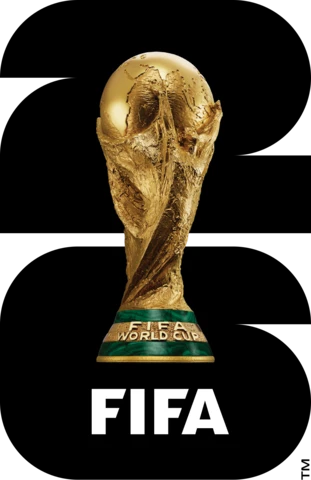
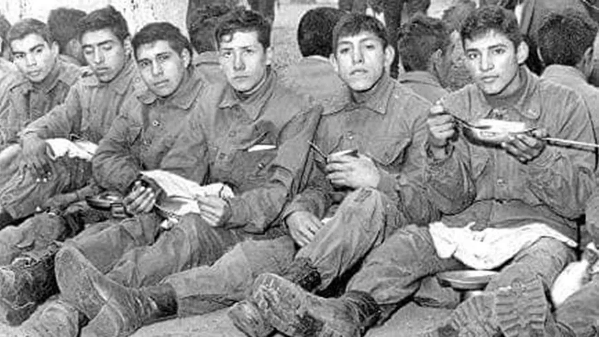
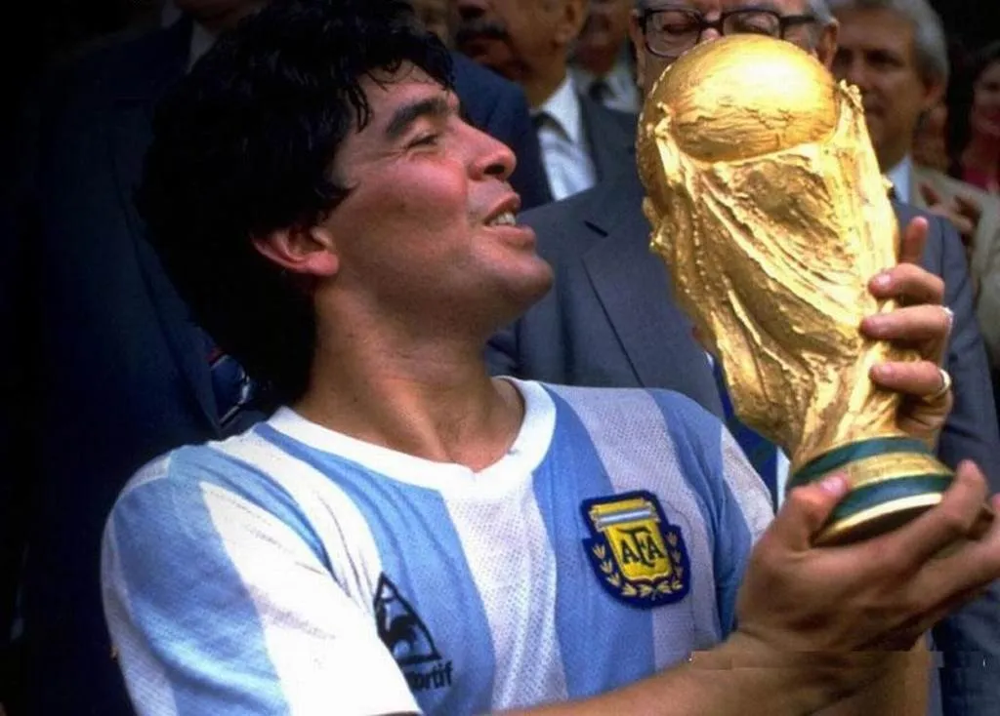
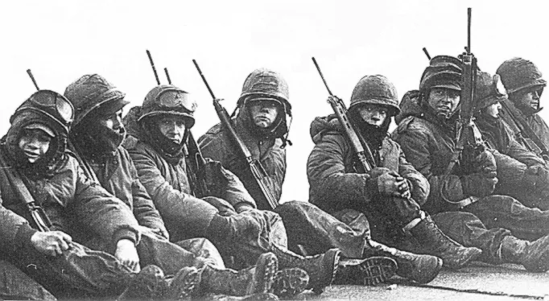
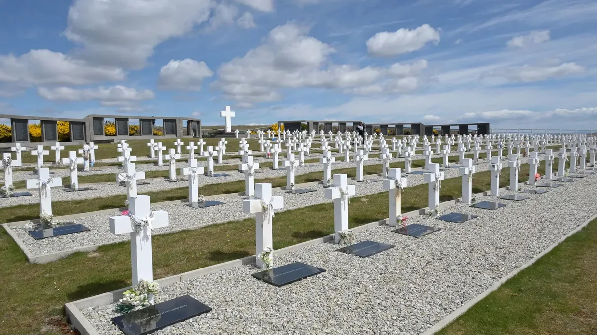

Más que un partido: Argentina e Inglaterra, una semifinal con 649 historias que no se olvidan
El miércoles en Atlanta, la pelota rodará con el peso de cuatro décadas de historia. Porque cuando Argentina e Inglaterra se enfrentan en un Mundial, nunca es solo fútbol.

Mundial 2026 — Informe GLOBALpatagonia

Mercedes-Benz Stadium · Atlanta, Estados Unidos
La semifinal del Mundial 2026 entre Argentina e Inglaterra se jugará este miércoles 15 de julio a las 16 (hora argentina) en el Mercedes-Benz Stadium de Atlanta. Pero para los argentinos, y especialmente para nuestra Patagonia, este partido comenzó a jugarse hace mucho tiempo. Mucho antes de que la pelota ruede en el césped estadounidense.
El grito que une generaciones.
“El que no salta es un inglés”. El canto resuena en cada estadio, en cada celebración, en cada rincón donde haya un argentino alentando a la Selección. Pero, ¿saben realmente los más jóvenes por qué hay que saltar para ser ingleses?
La respuesta no está en el presente. Está en las Islas Malvinas, a 463 kilómetros de la costa patagónica. Está en 1982, cuando 649 argentinos perdieron la vida en una guerra que el Reino Unido, bajo el liderazgo de Margaret Thatcher, llevó adelante para mantener la ocupación de un territorio que no le pertenece.
Para las nuevas generaciones, el grito “el que no salta es un inglés” ha trascendido su origen inmediato. Muchos jóvenes lo entonan con fervor, pero ¿comprenden el peso histórico de esas palabras? La canción popular “Muchachos, ahora nos volvimos a ilusionar” se encargó de plantar una bandera: “En Argentina nací, tierra de Diego y Lionel, de los pibes de Malvinas que jamás olvidaré”. Esa frase convirtió a la canción en mucho más que un himno de cancha.
Como explicó Juan Carlos Parodi, presidente del Centro de Excombatientes de Ushuaia, la canción ayudó a mantener vivo un sentimiento compartido y abrió la puerta a una reflexión más profunda sobre la historia, la memoria y el significado de la causa Malvinas para las nuevas generaciones. El grito, entonces, no es solo un desafío futbolístico: es un recordatorio de que hay una historia que no se negocia.

Thatcher, Milei y la polémica que no cierra
En medio de esta previa cargada de historia, las declaraciones del presidente Javier Milei han sumado un capítulo controversial. Milei ha manifestado en varias oportunidades su admiración por Margaret Thatcher, la ex primera ministra británica que condujo al Reino Unido durante el conflicto de 1982 y ordenó el hundimiento del ARA General Belgrano, donde murieron 323 argentinos.
“Ella fue brillante”, afirmó el mandatario en una entrevista con la BBC, y reforzó su postura al sostener que no ve problema en valorar a quien fue adversaria en la guerra: “Hubo una guerra y a nosotros nos tocó perder”. Incluso llegó a definir a Thatcher como una de “las grandes líderes de la historia de la humanidad”.

Estas declaraciones, particularmente sensibles en la Patagonia por el peso histórico de la guerra, han generado un fuerte rechazo. Excombatientes y dirigentes políticos cuestionaron que esa admiración “atenta contra el reclamo legítimo” de soberanía argentina y la consideran un agravio a la memoria de quienes participaron del conflicto. La valoración positiva de Thatcher rompe con un consenso histórico en Argentina respecto de Malvinas, una causa que suele unificar al arco político.
La mano de Dios y el gol del siglo

No se puede hablar de Argentina e Inglaterra en los Mundiales sin mencionar aquel 22 de junio de 1986 en el Estadio Azteca de México. Diego Armando Maradona, con la “Mano de Dios” primero y el “Gol del Siglo” después, selló una victoria que los argentinos interpretaron como mucho más que un triunfo deportivo.
Como explica el historiador Carlos Sebastián Ciccone, especialista en el estudio de la construcción de identidades nacionales a través del deporte: “Hay un sentir nacional que aumenta cuando juega con la selección y que hace que aflore un conflicto que sigue muy presente en el país”. Argentina lleva en el alma tres M: Maradona, Messi y las Malvinas.
El fútbol, como máxima expresión de la cultura popular, despierta pasiones que a menudo se entrelazan con la identidad nacional. Y cuando el rival es Inglaterra, esa identidad se vuelve más consciente, más militante.
El deporte no es la guerra
A horas del partido, la Federación de Veteranos de Guerra “2 de Abril” emitió un comunicado titulado “El sentimiento malvinero no se negocia: la memoria se defiende en cada cancha”. Los excombatientes pidieron diferenciar la semifinal del reclamo por la soberanía de las Islas Malvinas y llamaron a mantener viva la memoria “sin xenofobia ni odio”.
Fueron categóricos:
“El deporte no es la guerra. El partido de semifinales es un evento deportivo de alcance mundial, no una revancha armada ni una compensación histórica. La soberanía se defiende en los foros internacionales, con la diplomacia, la verdad histórica y el reclamo pacífico e irrenunciable que dicta nuestra Constitución Nacional”.
“Que el fútbol sea un puente para malvinizar y para recordar al mundo que nuestro reclamo sigue más vigente que nunca. La pelota rueda, el orgullo por nuestros colores se multiplica, pero la memoria permanece intacta”, concluyeron.

Un abrazo que cruza océanos
El fervor por la Selección Argentina no conoce fronteras. A 17.000 kilómetros de distancia, en Bangladesh, miles de fanáticos salen a las calles con camisetas celestes y blancas, muchos con la casaca número 10 de Lionel Messi, subidos a camiones entre banderas y cánticos.
¿Por qué Bangladesh ama tanto a Argentina? La respuesta está en 1982, cuando Bangladesh respaldó a la Argentina en los foros internacionales durante la Guerra de Malvinas. Y en 1986, el triunfo de la Selección con la “Mano de Dios” selló un amor que perdura hasta hoy. El conflicto con la Corona británica fue clave para construir ese vínculo emocional, junto con la figura de Maradona y los recientes éxitos de Messi.
Irlanda, otro país históricamente perjudicado por el Reino Unido, también encuentra en la camiseta argentina un símbolo de resistencia. Y no son los únicos. En cada rincón del mundo donde el colonialismo británico dejó heridas abiertas, hay alguien que el miércoles saltará con Argentina para no ser un inglés.
La pelota rueda, la memoria queda
Este miércoles en Atlanta, cuando los 70 mil espectadores del Mercedes-Benz Stadium coreen “el que no salta es un inglés”, cuando los jugadores argentinos salten al ritmo de ese grito ancestral, cuando la pelota ruede y el partido comience, no estará en juego solo un pase a la final.

Estará en juego la memoria de 649 héroes que quedaron en las islas y en las aguas del Atlántico Sur. Estará en juego la soberanía de un territorio que nos pertenece. Estará en juego, como dice el historiador Ciccone, un conflicto que “sigue muy presente en el país” y que “siempre se visibiliza en el fútbol”.
Porque, como bien lo dijeron los veteranos, el deporte no es la guerra. Pero el fútbol, cuando Argentina e Inglaterra se enfrentan, es el escenario donde una nación entera recuerda quién es y de dónde viene.
Que la pelota ruede. Que la memoria permanezca. Y que el miércoles, todos los que saltemos, lo hagamos por los pibes de Malvinas que jamás olvidaremos. ¡Que viva Argentina, que viva el deporte!